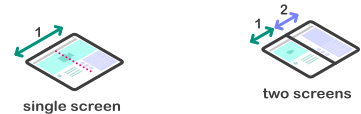
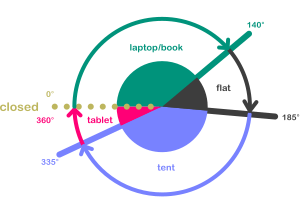
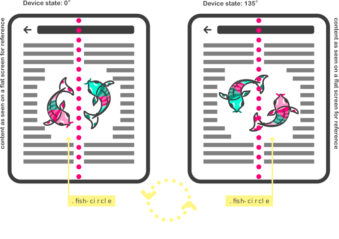

This document specifies an API that allows web applications to request the
angular value to which a device with a screen hinge is folded. Under the
right conditions, and if allowed, the value representing the angle in
degrees is returned.
Status of This Document
This section describes the status of this
document at the time of its publication. Other documents may supersede
this document. A list of current W3C publications and the latest revision
of this technical report can be found in the
W3C technical reports index at
https://www.w3.org/TR/.
Implementors need to be aware that this specification is extremely
unstable. Implementors who are not taking part in the
discussions will find the specification changing out from under them in
incompatible ways. Vendors interested in implementing this
specification before it eventually reaches the Candidate Recommendation
phase should
subscribe to the repository on GitHub and take part in the discussions.
This document was published by the Devices and Sensors Working Group as a
First Public Working Draft.
This document is intended to become a W3C Recommendation.
GitHub Issues are preferred for
discussion of this specification.
Publication as a First Public Working Draft does not imply endorsement
by the W3C Membership.
This is a draft document and may be updated, replaced
or obsoleted by other documents at any time. It is inappropriate to cite this
document as other than work in progress.
This document was produced by a group
operating under the
W3C Patent
Policy.
W3C maintains a
public list of any patent disclosures
made in connection with the deliverables of
the group; that page also includes
instructions for disclosing a patent. An individual who has actual
knowledge of a patent which the individual believes contains
Essential Claim(s)
must disclose the information in accordance with
section 6 of the W3C Patent Policy.
New types of mobile devices are appearing that have some sort of folding capabilities around the screen. Hence,
when the device folds, it physically forms an angle. The main interest in knowing the fold angle is because there
are opportunities in responsive design that enable new user experiences.
Among the described "folding" devices, there are mainly two different physical form factors: devices with a single
flexible screen (seamless), and devices with two screens (with seam). They can both fold around a hinge, and the
current specification applies to both types. It should be clarified as well that both seamless and (devices) with seam
can be of different dimension ranging from mobile and tablets to laptop sizes. It should also be noted that different
devices will have different default orientations (portrait or landscape), and that the fold might happen in a vertical
or horizontal way.

From enhancing the usability of a website by avoiding the area of a fold, to enabling innovative use cases for the
web, knowing the fold angle can help developers tailor their content to different devices. It can also enable to
detect different postures the device might be in.
Content can be consumed and browsed even when the device is not flat, in which case the developer might want to
provide a different layout for it depending on the state of the angle of the fold. Additionally, developers can
adapt content depending on various “postures” and potentially also animate some of these transitions. You can
refer to a description of use cases.
2.
Extensions to the Screen interface
The [cssom-view] specification defines the Screen interface,
which this specification extends:
This specification defines the following
posture values:
No-Fold is the posture of a device without a hinge.
This is the expected value for devices that do not fold.
Laptop posture indicates that the device is being used as
a traditional laptop, meaning one screen is placed on a more or
less horizontal surface with a screen angle between 180 to 0 degrees.
Flat posture indicates that one screen is being placed on
a more or less horizontal surface with a screen angle around 180 degrees.
Tent posture indicates that the edges of both screens are placed
on a horizontal surface but with an angle > 180 degrees.
Tablet posture is when the device can turn around on its hinge all the way to have
the screen back to back. The angle is considered to be around 360 degrees.
Book posture is when the device is used between around 50 and 160 degrees.
It is generally used while being held on (not on a surface).
The screen-fold-posture media feature represents,
via a CSS media query [MEDIAQ], the posture of the device.
This media feature applies to the top-level browsing
context and any child browsing contexts. Child browsing contexts
reflect the posture of the top-level browsing
context.
A user agent MUST reflect the applied posture of the web
application via a CSS media query [MEDIAQ].
The 'screen-fold-angle' media feature
The screen-fold-angle media feature represents,
via a CSS media query [MEDIAQ], the <angle> of the device.
This media feature applies to the top-level browsing
context and any child browsing contexts. Child browsing contexts
reflect the <angle> of the top-level browsing
context.
A user agent MUST reflect the applied <angle> of the web
application via a CSS media query [MEDIAQ].
6.
Reading the posture
All documents have a current screen fold angle and a
current posture. Both of them SHOULD be
initialized when the document is created, otherwise they MUST
be initialized the first time they are accessed and before their
value is read. The user agentMUSTupdate the screen fold
information of the document to initialize them.
The values are approximations and might differ per device. For instance, a device might not yield exactly 180° when laying flat, but instead values ranging from 175° to 185°. Device makers SHOULD make sure that the physical device postures map correctly to the postures defined by this specification.
Some devices might also lack one or more of the postures due to physical constraints or device design, in which case the device SHOULD make sure that all combinations of angles and device orientation (which can be locked by [SCREEN-ORIENTATION] and host OS) maps into one of the defined postures.

The posture values table shows how the posture
values are derived depending on the orientation of the fold:
Horizontal Fold
Devices with a horizontal fold are the ones for which in their
main form factor, the folding occurs from side to side, across
the screen(s).
The posture values table for devices with a horizontal fold
Developers need to be aware that a Screen.fold object
from a document that is not visible, as per
[PAGE-VISIBILITY], will not receive an orientation change event.
This is to prevent unnecessary changes to layout, etc. in the
non-visible web application.
Issue 1
This section could be improved if the [PAGE-VISIBILITY]
specification had a hook for when the document becomes visible and
hidden. PR 54.
8.
Security and Privacy considerations
The Screen Fold API exposes two kinds of information:
Typical sensor readings are sent at a constant frequency to whomever is listening to its readings.
However the fold angle only communicates its value when the hinge is manipulated by the user.
Variations in the angle’s readings and posture calculation, as well as event dispatching frequency
offer a possibility of fingerprinting to identify users. User agents may reduce this risk by limiting
or coalescing events when exposing this information to web developers. Users don’t constantly adjust
the angle, so the fold angle value is changing in bursts: the events may be dispatched at a very low
frequency most of the time and fire at a high frequency when the device is being opened or closed.
In order for the events to be dispatched, the content must be on the foreground and visible to the
user.
Minimizing the accuracy of the angle readout generally decreases the risk of fingerprinting.
User agents should not provide unnecessarily verbose readouts of the hinge angle data.
Posture values are not very useful values to fingerprint a user. They’re similar in concept
with the orientation values. The posture change is only triggered in certain fold angle values
providing a very low resolution reading. Because the changes are very sparse changes with very
few predefined values, it makes it hard to precisely identify users across sites.
If the same code using the API can be used simultaneously in different window contexts on the same
device it may be possible for that code to correlate the user across those two contexts, creating
unanticipated tracking mechanisms.
8.1
Types of security and privacy threats
This section is non-normative.
8.1.1
Device Fingerprinting
Sensors can provide information that can uniquely identify the device using those sensors.
Every concrete sensor model has minor manufacturing imperfections and differences that will be
unique for this model. These manufacturing variations and imperfections can be used to
fingerprint the device.
8.2 Mitigation Strategies
This section is non-normative.
This section gives a high-level presentation of some of the mitigation strategies specified
in the normative sections of this specification.
8.2.1
Secure Context
Posture value and fold angle readings are explicitly flagged by the Secure Contexts specification as a
high-value target for network attackers. Thus all interfaces defined by this specification or extension
specifications are only available within a secure context.
8.2.2
Focused Area
Posture value and fold angle readings are only available for active documents whose origin is the
same origin-domain with the currently focused area document.
This is done in order to mitigate the risk of a skimming attack against the browsing context
containing an element which has gained focus, for example when the user carries out an in-game
purchase using a third party payment service from within an iframe.
8.2.3
Visibility State
Posture value and fold angle readings are only available for the active documents
whose visibility state is "visible".
8.3 Mitigation strategies applied on a case by case basis
8.3.1
Limit maximum sampling frequency
User agents may mitigate certain threats by limiting the maximum sampling frequency.
Coalescing and aligning the fold angle readings with the animation frame would limit
the fingerprinting while still allowing animations responding to the fold angle. Limiting
the maximum sampling frequency prevents use cases which rely on low latency or high
data density.
8.3.2
Limit number of delivered readings
An alternative to limiting the maximum sampling frequency is to limit the number of sensor
readings delivered to Web application developers, regardless of what frequency the sensor
is polled at. This allows use cases which have low latency requirements to increase sampling
frequency without increasing the amount of data provided. Discarding intermediary readings
prevents certain use cases, such as those relying on certain kinds of filters.
User agent should wait before sending the angle value changes after a minimum of degrees
changes to remove the noise as well as to avoid getting events while the user is just
interacting with the screen. This would limit identifying users with shaky hands.
8.3.3
Reduce accuracy
Lowering the resolution of the angle MAY lead to reducing the uniqueness
that the value can have. Nonetheless, if several sites are being displayed
on the same device, it can be easy to identify that it is the same user,
even if the value is rounded. As a solution, applying some fuzziness to
the value itself MAY work.
8.3.4
Applying fuzziness to the angle value
Lowering the resolution of the returned value may not be enough, so fuzzing
out the value can algo help, in order to report different values. This fuzzy
offset can help differentiate returned values, minimizing the risk of fingerprinting.
9.
Examples
This section is non-normative.
Example 1: screen.fold data
This is a simple use case of the posture and angle value being printed on the console.
screen.fold.addEventListener("change", () => {
const { angle, posture } = screen.fold;
console.log(`The current screen angle is ${angle}, which means it is in ${posture} posture!`);
})
Example 2: screen-fold-posture
The device is being used for a video call web service. It can be folded into the laptop posture to
enable a hands-free when placed on a surface. The UA detects the posture and the UI is enhanced.
Similar examples can be drafted for content to adapt to any posture. See the explainer for other key scenarios.
Some scenarios might span outside of the default postures envisioned in this document.
The screen-fold-angle media feature allows to define a range or threshold for the layout to
change.
As an example, an experience that might require a separate viewing area by user (like a game)
might find that the default 185° starting angle for the tent posture is too "open" to guarantee
one user will not see the other user's screen. Using screen-fold-angle the threshold can be
defined by the developer.
@media (min-screen-fold-angle:270deg) {
/*enable custom layout for the app*/
}
Example 4 & 5: Animation
Opening and closing a device might include animations linked to the value of the angle of the fold.
This allows the creation of content that can mimic the effect of a pop-up book.
Another example can be mapping the state of the fold of a device to transformations of a DOM element.
With this approach you could rotate an element based on the value of the angle.

Example 4: Element animation based on fold value (JS)
let fish = document.querySelector('.fish-circle');
ScreenFold.addEventListener('change', function(e) {
//animation keyframeslet rotationFish = [
{transform: `rotate(${e.angle})`, easing: 'ease-out'}
];
fish.animate(rotationFish, 100);
};
Example 5: Element animation based on fold value (CSS)
Example 6: Feature detection of screen-fold-posture media feature
As one of the valid screen-fold-posture values will always be true, you can use the following
snippet to detect whether a user agent supports the media feature:
This should now be updated since the animation frame task issue
is recently resolved and the timing is now defined.
11. Conformance
As well as sections marked as non-normative, all authoring guidelines, diagrams, examples, and notes in this specification are non-normative. Everything else in this specification is normative.
The key words MAY, MUST, and SHOULD in this document
are to be interpreted as described in
BCP 14
[RFC2119] [RFC8174]
when, and only when, they appear in all capitals, as shown here.
This specification defines conformance criteria for a single product: a
user agent that implements the interfaces that it contains.